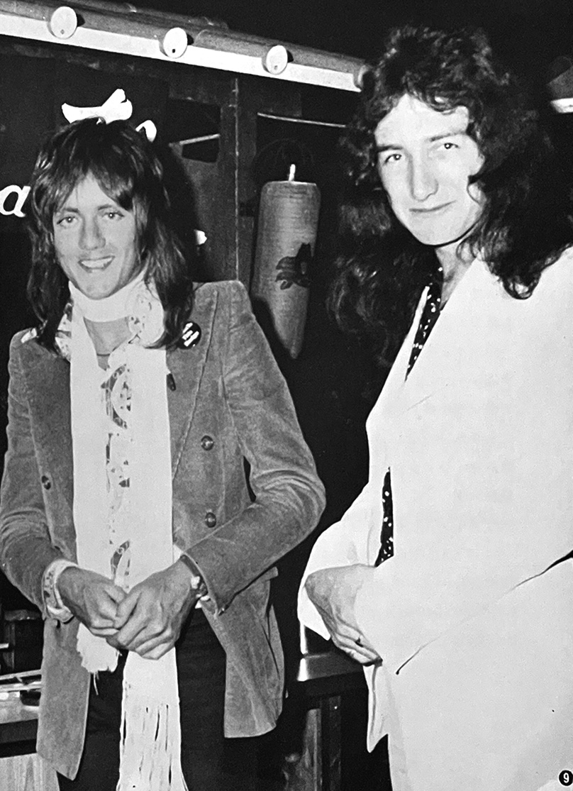
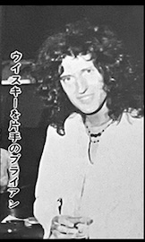
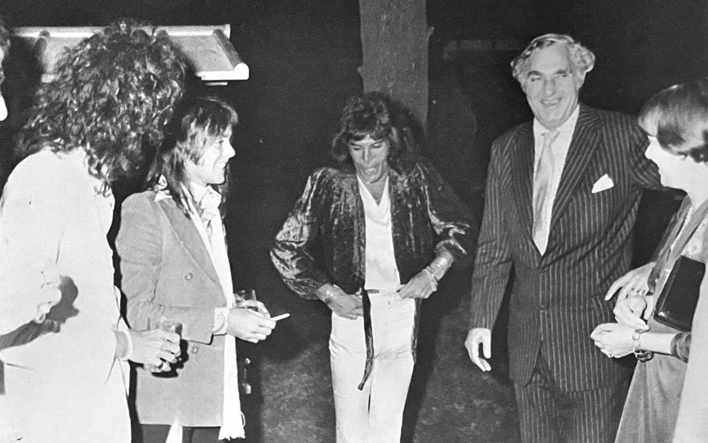

The Four Members of Queen are Unusually Friendly and Nice
by Ikuzo Orita, Warner Pioneer

I've always wondered why young people are so excited about Queen, whose music is anything but simple and idol-like. Rather, it pursues a sophisticated, heavy metal sound that's a mix of Yes and Led Zeppelin. When we saw them in Chicago and St. Louis, the reaction of young Americans was different from the enthusiastic reaction of fans in Japan. They seemed to enjoy Queen's music coolly, and we were left with the strong impression that they were a group that could be listened to in the same way as Yes. Therefore, the excessive idol-like fervor in Japan gives us record company executives mixed feelings of gratitude and anxiety. Queen is clearly a different group from other bands that are currently making British kids go crazy, such as the Bay City Rollers or Pilot, so their success here is a reflection of the sensitive ears of Japanese kids. I wouldn't be able to write much on that topic because the fans know Queen's music far better than I do; but I would like to write about their off-stage behavior and nature during their US and Japanese tours in my own words.

Brian, the guitarist, is a tall, nice guy with a constant smile on his face. Perhaps a man like Brian is what they call a mensch. He is considerate of those around him, offering words of encouragement and smiling at even the most persistent of fans. He is so kind that we around him worry about him... it makes us wonder if he can really make it in the tough world of showbiz. He seems to be of delicate constitution as well, and it makes sense that he had to cancel their first US tour midway through due to an internal injury. His kindness must be what makes the girls' hearts ache. However, as everyone knows, his guitarwork onstage is dynamic and brilliant. He is a fine young man who respects Jimi Hendrix and has an interest in photography and cameras. He also receives a lot of handmade things from fans and seems to be the most diligent in replying to letters.

Roger, the drummer, is the most popular guy in the group; even I was enamored when I saw his cute blond face. He is the most talkative (but not chatty) of the four, and outwardly the friendliest. He loves to play pachinko, and apparently snuck out of his hotel to play in Kyoto and Fukuoka. I was particularly impressed when I heard that in Kyoto he managed to get about ¥500 out of every ¥100 spent. He also seems to have received the most presents from fans.
All four of them drink only in moderation and are very serious, which is understandable considering that they were isolated from their hordes of fans and surrounded by security guards while they were in Japan; but they were also very earnest in America, like honor students, and unlike other British groups they didn't seem to be out to raise hell.
The Queen whirlwind will start up again in about six months!